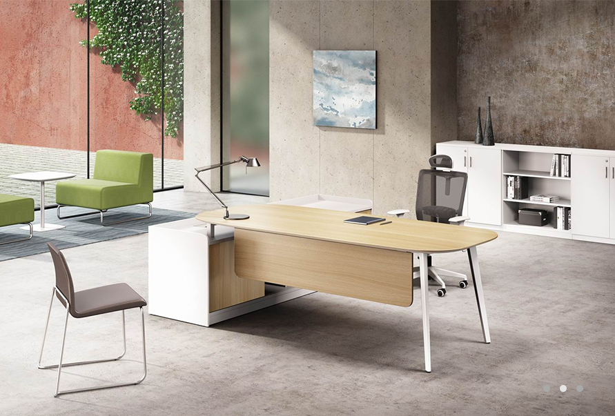

2015.09.07
市场研发中心年度市场巡访纪行

在中国股市震荡、汇市调整、全球市场剧烈波动的大背景下，各行各业面临着巨大的挑战。目前，家具市场不景气，不管是一线品牌还是中小型家具企业都感受到前所未有的压力。此番形势下，更需要把握市场动态，积极调整战略，以求在动荡不安的市场中稳步发展。为此，9月7日至10日，欧林总部市场中心、研发中心继华南市场走访后北上，一行6人走访了南京、苏州、上海、杭州四地分公司。
如今，人们的品牌意识空前强烈，对品牌的追求越来越热衷。且随着自我意识的增强，对产品的个性化要求也越来越高。凭借19年的品牌沉淀，以及引领办公家具行业潮流的先锋意识，欧林在当下低迷的行业形势下，仍保持良好的发展势头。因此，充分做好品牌推广、提供个性化产品，才能继续保持欧林产品的市场竞争力。
品牌是以产品为龙头的企业形象，是企业占据市场，获取最佳效益和良好信誉的有力保证。做好产品固然重要，但品牌营销策略也是必不可少的。此行，就品牌推广的现状与分公司同事展开了讨论，主要是针对图册更新、网站更新、微信公众平台、推广物等品牌推广工作，除了收获了肯定以外，分公司同事也积极提出见解，给予不少具有参考价值的意见。这个过程中，市场中心全力发展品牌力量的决心给予了各分公司信心，同时市场中心也在收获支持的声音中倍感激情。
产品是企业的龙头，因此市场巡访的重头戏总在新产品的培训和推广。“莱弗”系列是欧林今年的新品，它顺应复古的怀旧潮流，重新解读工业设计元素，尤其造型上，光滑平缓的外表与工业元素粗犷的纪念风格形成强烈的对比，充斥着个性的张扬。这款产品的丰富内涵和气质，让人充满期待。就“莱弗”的外形特征、结构、功能及设计理念，市场中心经理Ian给予了详细的说明。综合市场需求，目前为止，还开发了新维塔屏风、承德班台、百唯书写柜、多功能茶几等产品。对于这些产品，Ian也一一作了解说。
此次走访，行程紧迫，但团队每到一处都收到大家热情的接待，奔波的疲惫也顿时被遗忘了，每到一处都呈现热切的互动学习状态。对于分公司同事提出的问题，团队都认真做好记录，如不能当场解答的，也在后期做了跟进回复。虽然同是在为欧林服务，但难得相聚，如此面对面接触交流的方式，更容易拉近彼此之间的距离。
对于欧林，我们欧林人都有着心中的期许，相信每次火花迸射般的思想碰撞会给欧林注入源源不断的新鲜血液，让我们创造更好的共赢模式，向更好的未来不断迈进。


.png)
.png)